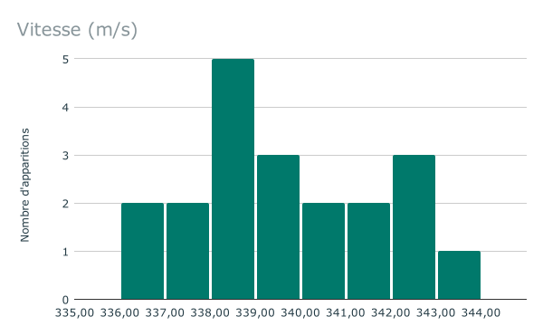

Problème
Un groupe d’élèves effectue la mesure de la célérité des ultrasons dans l’air dans une pièce à $\pu{20 °C}$. Leurs résultats sont regroupés dans le tableau ci-dessous :
| N° mesure | Valeur ($\pu{m/s}$) | N° mesure | Valeur ($\pu{m/s}$) | |:-:| :-: |:-:|:-:| | 1 | 338 | 11 | 338 | | 2 | 341 | 12 | 336 | | 3 | 338 | 13 | 342 | | 4 | 340 | 14 | 341 | | 5 | 337 | 15 | 337 | | 6 | 339 | 16 | 342 | | 7 | 342 | 17 | 336 | | 8 | 338 | 18 | 338 | | 9 | 340 | 19 | 339 | | 10 | 339 | 20 | 343 |
À partir des mesures obtenues, évaluer la célérité des ultrasons dans l’air à $\pu{20 °C}$ en calculant l’incertitude de répétabilité avec un niveau de confiance de 95 % puis à 99 %.
Ce calcul sera effectué en utilisant un tableur.
Travail
Création d’un histogramme
- Sélectionner la colonne
B. - Choisir : Insertion $>$ Graphique.
- Dans la partie Type de graphique, sélectionner Histogramme.
- Choisir l’onglet Personnaliser puis Histogramme, Taille des barres : 1.
- Choisir l’onglet Personnaliser puis Axe horizontal :
- Min : 335
- Max : 345
- Quelle est la vitesse la plus représentée ?
Réponse
 $v=\pu{338 m/s}$
Estimation de la valeur de la vitesse
- Dans la cellule C2, faire calculer par le tableur la moyenne de la série de mesures.
Réponse
- Formule à entrer : =MOYENNE(B2:B21)
- Valeur : $v=\pu{339,2 m/s}$
- Dans la cellule D2, faire calculer par le tableur la moyenne des six premiers termes de la série de mesures.
Réponse
- Formule à entrer : =MOYENNE(B2:B7)
- Valeur : $v=\pu{338,8 m/s}$
- Pourquoi les deux moyennes calculées aux questions précédentes ne sont-elles pas égales ?
Réponse
On a calculé des moyennes de séries différentes, il est donc normal que ces
moyennes soient différentes.
La valeur moyenne est une grandeur aléatoire.
- Comment faire en sorte que la valeur moyenne caractérise au mieux « la série de mesures » ?
Réponse
Il faut réaliser le plus grand nombre d’expériences possible.
Incertitude de répétabilité
L’incertitude de mesure $U(m)$ correspondant à des mesures répétées d’une même grandeur est appelée incertitude de répétabilité . Elle est liée à l’écart-type de la série de mesures.
-
Pour une série de $n$ mesures indépendantes donnant des valeurs mesurées $m_{k}$ l’écart-type de la série de mesures est donné par la formule : $$ \sigma_{n - 1} = \sqrt{\dfrac{\sum_{k = 1}^n (m_{k} - \overline{m})^2}{n - 1}} $$ où $\overline{m}$ est la valeur moyenne de la série de mesures.
L’écart type est obtenu en utilisant les fonctions statistiques d’une calculatrice, d’un tableur ou d’un programme écrit en Python. -
L’incertitude de répétabilité associée à la mesure se calcule alors grâce à la formule : $$ U (m) = k \hspace{0.17em} \dfrac{\sigma_{n - 1}}{\sqrt{n}} $$
Elle dépend du nombre $n$ de mesures indépendantes réalisées, de l’écart type de la série de mesures et d’un coefficient $k$ appelé facteur d’élargissement (ou coefficient de Student).
- Le facteur d’élargissement $k$ dépend du nombre de mesures réalisées $n$ et du niveau de confiance choisi.
Quelques valeurs de $k$ :
| nn | 2 | 3 | 4 | 5 | 6 | 7 | 8 | 9 | 10 | 11 | 12 | 13 | 14 | 15 | 16 |
|---|---|---|---|---|---|---|---|---|---|---|---|---|---|---|---|
| $k$ 95% | 12,7 | 4,30 | 3,18 | 2,78 | 2,57 | 2,45 | 2,37 | 2,31 | 2,26 | 2,23 | 2,20 | 2,18 | 2,16 | 2,15 | 2,13 |
| $k$ 99% | 63,7 | 9,93 | 5,84 | 4,60 | 4,03 | 3,71 | 3,50 | 3,36 | 3,25 | 3,17 | 3,11 | 3,06 | 3,01 | 2,98 | 2,95 |
- Pour un même nombre de mesures, comment évolue $k$ avec le niveau de confiance ? Qu’est-ce que cette évolution traduit ?
Réponse
Pour un même nombre de mesures, $k_{\pu{95 }} < k_{\pu{99}}$. Plus grande est l’incertitude $U (m)$, plus grande est la probabilité que la « valeur vraie » se trouve dans l’intervalle $\overline{m} \pm U (m)$.
- Pour un même niveau de confiance, comment évolue $k$ avec le nombre de mesures réalisées ? Qu’est-ce que cette évolution traduit ?
Réponse
$k$ diminue lorsque le nombre de mesures augmente. Plus le nombre de mesures est grand, plus la valeur moyenne de la série est représentative de la valeur mesurée et plus petit peut donc être l’intervalle autour de cette valeur moyenne. On retrouve l’idée qu’il est préférable de faire un grand nombre de mesures.
Pourquoi choisir l’écart type ?
On cherche maintenant à calculer la somme des écarts à la valeur moyenne :
$$ \sum_{k = 1}^n (m_{k} - \overline{m}) $$
- Dans la colonne E faire calculer par le tableur l’écart de toutes les mesures à la moyenne.
Pourquoi certaines valeurs sont-elles négatives ?
Réponse
- Dans la cellule E2, entrer la formule =B2-$C$2 puis « tirer » vers le bas.
- L’écart à la moyenne est une grandeur algébrique, parfois $m_k > \bar{m}$, parfois $m_k < \bar{m}$.
- Dans la cellule F2, calculer la somme des écarts à la moyenne.
Le résultat obtenu était-il prévisible ?
Réponse
- Entrer la formule =SOMME(E2:E21).
- On obtient une valeur nulle (aux arrondis près). Ce résultat était tout à fait prévisible puisque la valeur moyenne est le point d’équilibre de la série de valeurs : les écarts positifs sont donc compensés par les écarts négatifs.
- L’écart-type ne considère pas les écarts à la valeur moyenne mais les
carrés de ces écarts (cf. formule ci-dessus). Ils ne peuvent donc pas se
compenser.
Dans la colonne G, faire calculer par le tableur le carré des écarts à la moyenne.
Réponse
Dans la cellule G2, entrer la formule =E2*E2 puis « tirer » vers le bas.
- Dans la cellule H2, calculer la valeur de l’écart-type $\sigma_{n-1}$.
Réponse
Dans la cellule H2, entrer la formule =RACINE(SOMME(G2:G21)/19).
- Tout tableur possède, en interne, une fonction ECARTYPE capable de calculer directement l’écart-type d’une série de mesures. Utiliser cette fonction pour vérifier que le résultat obtenu à la question 13. est correct.
Réponse
Dans la cellule I2, entrer la formule =ECARTYPE(B2:B21).
- Dans les cellules J2 et K2, calculer les incertitudes $U_95$ et $U_99$ associées à la série de mesure.
Pour une série de $n$ échantillons, $k_{95} = \pu{2,09}$ et $k_{99} = \pu{2,85}$.
Réponse
- Dans la cellule J2, entrer la formule =I2*2,09/RACINE(20) ;
- Dans la cellule K2, entrer la formule =I2*2,85/RACINE(20).
- Donner la célérité des ultrasons pour une confiance de 95 % puis pour une confiance de 99 %.
Réponse
- Pour une confiance de 95 %, $v = \pu{339 \pm 1) m.s-1}$ ;
- Pour une confiance de 99 %, $v = \pu{339 \pm 2) m.s-1}$ ;